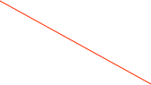

Status and Error Logging

Alarms
The Alarm Log section keeps a running list of all alarms. You can apply a filter to see just the types you’re interested in. Note that the alarm log is persistent and only cleared manually. You should clear the alarms once in a while to prevent the list from getting too long. A very long list will slow down ORCA start-up.


The status log keeps a record of ORCA system activities and can be opened from the main menu Windows->Status Log. At the end of every run, the status log from the duration of that run is copied to a location specified by the disk object. The copied status log also has a summary of any errors that had been logged during the run. When the status log gets too long (100K or so), the oldest 1/3 is deleted.
Also the status log content can be emailed.


Alarms and other serious messages are posted in red
Total number of errors that been posted on the error log page would be listed here
Clears the error count without removing any entries
Errors will be listed here in a tree format. Entries can be removed by selecting with the mouse and using the delete key.
Time the message was posted, mmddyy 24hr time
Error Logging
System-wide errors are counted and logged in a tree hierarchy, with each level of the tree labeled with a title and the total of all the errors in the children of that branch.
Log Book
You can keep a log book of activities using the ORCA log book. The log book content can be emailed.
Note that you can drag and drop pictures into the log book
Name of the current log book file
E-Mail
If the LogBook or the Status Log is the key window, then you can send their content via email. Just select 'Mail Content' from the main menu:

Scripting
You can email the entire status log from a script:
function main()
{
s = find(ORScriptTaskModel,1);
[s sendStatusLogTo:"somebody@somewhere.unc.edu" cc:nil subject:"ORCA status log"];
}
You can email the most recent by number of seconds. In the following case the last 20 seconds are extracted and sent:
function main()
{
s = find(ORScriptTaskModel,1);
[s sendStatusLogTo:"somebody@somewhere.unc.edu" cc:nil subject:"ORCA status log from ORCAScrip" lastSeconds:20];
}

Clear the list once in awhile


The operation of the e-mail dialog should be obvious. Note that you can add your own content to the edit window.